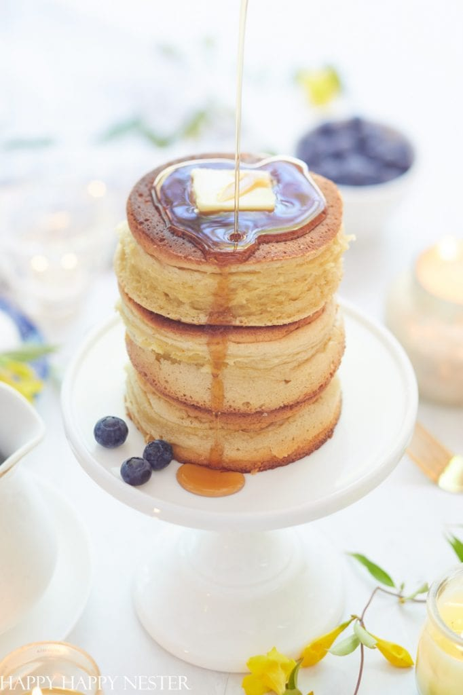

Home
Pancake

Description
Pancakes are soft, fluffy flat cakes made from a simple batter of flour, milk, and eggs, cooked on a hot pan until golden.
They’re a popular comfort food enjoyed with sweet or savoury toppings for breakfast or dessert.
Ingredients
- 1 cup all-purpose flour
- 1 tablespoon sugar
- 1 teaspoon baking powder
- 1 egg
- 1 cup milk
- 1 tablespoon melted butter or oil
- Pinch of salt
Steps
- Add flour, sugar, baking powder, and salt to a bowl
- Crack the egg into the bowl
- Pour in milk and melted butter/oil
- Whisk until smooth (no big lumps)
- Heat a non-stick pan on medium heat
- Lightly grease the pan
- Pour one ladle of batter into the pan
- Cook until bubbles form on top
- Flip and cook the other side until golden
- Remove and serve hot